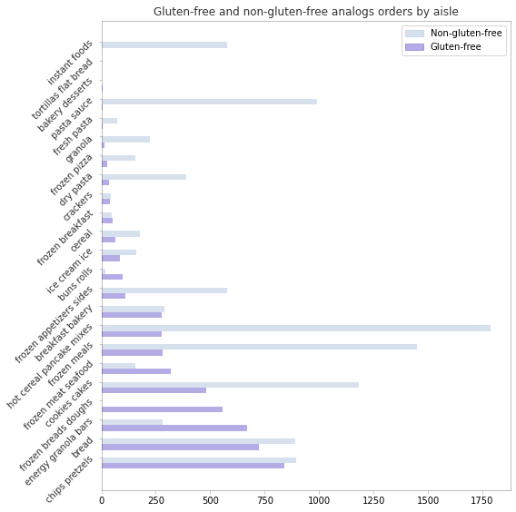
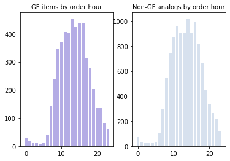

Does naming of a product influence its popularity? In this exercise, I use a dataset provided to Kaggle by Instacart (a grocery ordering and delivery app) in order to try and answer the question about whether including the information about the product being "gluten-free" affects the number of customers who buy it. The analysis is performed in pandas library, and the main statistics explored is Jaccard similarity coefficient.
Questions to answer
1. For two similar products, will the inclusing of "gluten-free" status in the name of one of the products influence its popularity?
2. Are these results going to be different for different types of products and time of purchase?
#importing necessary libraries and the dataset
from google.colab import drive
import pandas as pd
drive.mount("/content/drive")
Go to this URL in a browser: https://accounts.google.com/o/oauth2/auth?client_id=947318989803-6bn6qk8qdgf4n4g3pfee6491hc0brc4i.apps.googleusercontent.com&redirect_uri=urn%3aietf%3awg%3aoauth%3a2.0%3aoob&response_type=code&scope=email%20https%3a%2f%2fwww.googleapis.com%2fauth%2fdocs.test%20https%3a%2f%2fwww.googleapis.com%2fauth%2fdrive%20https%3a%2f%2fwww.googleapis.com%2fauth%2fdrive.photos.readonly%20https%3a%2f%2fwww.googleapis.com%2fauth%2fpeopleapi.readonly
Enter your authorization code:
··········
Mounted at /content/drive
df = pd.read_csv("drive/My Drive/datasets/order_new_foranalysis.csv", index_col = 'Unnamed: 0')
/usr/local/lib/python3.6/dist-packages/numpy/lib/arraysetops.py:569: FutureWarning: elementwise comparison failed; returning scalar instead, but in the future will perform elementwise comparison
mask |= (ar1 == a)
import matplotlib.pyplot as plt
%matplotlib inline
#checking the data
df.head()
| order_id | user_id | eval_set | order_number | order_dow | order_hour_of_day | days_since_prior_order | product_id | add_to_cart_order | reordered | product_name | aisle_id | department_id | aisle | department | |
|---|---|---|---|---|---|---|---|---|---|---|---|---|---|---|---|
| 0 | 1187899 | 1 | train | 11 | 4 | 8 | 14.0 | 196 | 1 | 1 | Soda | 77 | 7 | soft drinks | beverages |
| 1 | 1187899 | 1 | train | 11 | 4 | 8 | 14.0 | 25133 | 2 | 1 | Organic String Cheese | 21 | 16 | packaged cheese | dairy eggs |
| 2 | 1187899 | 1 | train | 11 | 4 | 8 | 14.0 | 38928 | 3 | 1 | 0% Greek Strained Yogurt | 120 | 16 | yogurt | dairy eggs |
| 3 | 1187899 | 1 | train | 11 | 4 | 8 | 14.0 | 26405 | 4 | 1 | XL Pick-A-Size Paper Towel Rolls | 54 | 17 | paper goods | household |
| 4 | 1187899 | 1 | train | 11 | 4 | 8 | 14.0 | 39657 | 5 | 1 | Milk Chocolate Almonds | 45 | 19 | candy chocolate | snacks |
#simple cleaning of the name column
df["product_name"] = df.product_name.str.lower()
df["product_name"] = df.product_name.str.replace(r"[^\w\s]", "")
df.head()
| order_id | user_id | eval_set | order_number | order_dow | order_hour_of_day | days_since_prior_order | product_id | add_to_cart_order | reordered | product_name | aisle_id | department_id | aisle | department | |
|---|---|---|---|---|---|---|---|---|---|---|---|---|---|---|---|
| 0 | 1187899 | 1 | train | 11 | 4 | 8 | 14.0 | 196 | 1 | 1 | soda | 77 | 7 | soft drinks | beverages |
| 1 | 1187899 | 1 | train | 11 | 4 | 8 | 14.0 | 25133 | 2 | 1 | organic string cheese | 21 | 16 | packaged cheese | dairy eggs |
| 2 | 1187899 | 1 | train | 11 | 4 | 8 | 14.0 | 38928 | 3 | 1 | 0 greek strained yogurt | 120 | 16 | yogurt | dairy eggs |
| 3 | 1187899 | 1 | train | 11 | 4 | 8 | 14.0 | 26405 | 4 | 1 | xl pickasize paper towel rolls | 54 | 17 | paper goods | household |
| 4 | 1187899 | 1 | train | 11 | 4 | 8 | 14.0 | 39657 | 5 | 1 | milk chocolate almonds | 45 | 19 | candy chocolate | snacks |
def jaccard_sim(str1):
"""A function to check Jaccard similarity coefficient
(intersection divided by union of sets) of an item name
and a list of other names, returns a tuple - a match with highest score and a score"""
set1 = set(str1.split())
maxn = products[0]
set2 = set(maxn.split())
intersec = set1.intersection(set2)
maxv = float(len(intersec) / (len(set1)+len(set2) - len(intersec)))
for name in products[1:]:
set2 = set(name.split())
intersec = set1.intersection(set2)
result = float(len(intersec) / (len(set1)+len(set2) - len(intersec)))
if result > maxv:
maxv = result
maxn = name
to_return = (maxn, maxv)
return to_return
gf = df[df["product_name"].str.contains("gluten")]
print(gf.department.value_counts())
#reducing departments to 5 with the highest number of orders
gf = gf[gf["department"].str.contains("snacks|frozen|bakery|breakfast|dry goods pasta")]
df = df[df["department"].str.contains("snacks|frozen|bakery|breakfast|dry goods pasta")]
frozen 5029
snacks 4967
bakery 2505
breakfast 2189
dry goods pasta 1744
pantry 768
international 511
deli 476
babies 266
dairy eggs 142
canned goods 98
personal care 40
missing 39
other 14
meat seafood 12
Name: department, dtype: int64
products = gf.product_name.unique()
gluten = df[~df.product_name.isin(products)]
print(df.shape)
print(gf.shape)
print(gluten.shape)
df.shape[0] == gf.shape[0] + gluten.shape[0]
(335895, 15)
(16434, 15)
(319461, 15)
True
#checking if there are no gluten-free products missed in "gluten"
gluten[gluten.product_name.str.contains("gluten")]
| order_id | user_id | eval_set | order_number | order_dow | order_hour_of_day | days_since_prior_order | product_id | add_to_cart_order | reordered | product_name | aisle_id | department_id | aisle | department |
|---|
#counting the highest jaccard similarity for non-gluten-free items to see if there are items with names similar to ones
#gluten-free
pd.options.mode.chained_assignment = None
gluten.loc[:,"paired"] = gluten["product_name"].apply(jaccard_sim).copy()
#adding columns for most similar product and the similarity scor
gluten["paired_item"] = gluten["paired"].apply(lambda x: x[0])
gluten["paired_score"] = gluten["paired"].apply(lambda x: x[1])
gluten.drop("paired", axis = 1, inplace = True)
gluten.head()
| order_id | user_id | eval_set | order_number | order_dow | order_hour_of_day | days_since_prior_order | product_id | add_to_cart_order | reordered | product_name | aisle_id | department_id | aisle | department | paired_item | paired_score | |
|---|---|---|---|---|---|---|---|---|---|---|---|---|---|---|---|---|---|
| 4 | 1187899 | 1 | train | 11 | 4 | 8 | 14.0 | 39657 | 5 | 1 | milk chocolate almonds | 45 | 19 | candy chocolate | snacks | gluten free chocolate brownies | 0.166667 |
| 5 | 1187899 | 1 | train | 11 | 4 | 8 | 14.0 | 10258 | 6 | 1 | pistachios | 117 | 19 | nuts seeds dried fruit | snacks | gluten free whole grain bread | 0.000000 |
| 6 | 1187899 | 1 | train | 11 | 4 | 8 | 14.0 | 13032 | 7 | 1 | cinnamon toast crunch | 121 | 14 | cereal | breakfast | gluten free cinnamon french toast sticks | 0.285714 |
| 7 | 1187899 | 1 | train | 11 | 4 | 8 | 14.0 | 26088 | 8 | 1 | aged white cheddar popcorn | 23 | 19 | popcorn jerky | snacks | aged white cheddar glutenfree baked rice and c... | 0.300000 |
| 13 | 1492625 | 2 | train | 15 | 1 | 11 | 30.0 | 16589 | 3 | 1 | plantain chips | 107 | 19 | chips pretzels | snacks | glutenfree original falafel chips | 0.200000 |
#filtering out items with the score less than 0.5
analog = gluten[gluten.paired_score > 0.5]
analog.tail(10)
| order_id | user_id | eval_set | order_number | order_dow | order_hour_of_day | days_since_prior_order | product_id | add_to_cart_order | reordered | product_name | aisle_id | department_id | aisle | department | paired_item | paired_score | |
|---|---|---|---|---|---|---|---|---|---|---|---|---|---|---|---|---|---|
| 1382961 | 2633656 | 205981 | train | 7 | 0 | 16 | 30.0 | 42193 | 10 | 0 | chocolate chip cookie | 61 | 19 | cookies cakes | snacks | chocolate chip cookie gluten free | 0.600000 |
| 1383093 | 1220791 | 205997 | train | 8 | 1 | 18 | 8.0 | 25043 | 10 | 0 | instant oatmeal variety pack | 130 | 14 | hot cereal pancake mixes | breakfast | variety pack of gluten free instant oatmeal | 0.571429 |
| 1383109 | 3319420 | 206005 | train | 24 | 0 | 12 | 10.0 | 25246 | 7 | 0 | white cheddar macaroni cheese cups | 4 | 9 | instant foods | dry goods pasta | organic glutenfree white cheddar macaroni cheese | 0.571429 |
| 1383434 | 2926243 | 206051 | train | 38 | 3 | 16 | 6.0 | 14553 | 5 | 0 | oats honey granola | 57 | 14 | granola | breakfast | oats honey gluten free granola | 0.600000 |
| 1383824 | 2682845 | 206108 | train | 14 | 0 | 18 | 27.0 | 35004 | 29 | 1 | macaroni shells white cheddar cheese | 4 | 9 | instant foods | dry goods pasta | organic glutenfree white cheddar macaroni cheese | 0.571429 |
| 1383830 | 2682845 | 206108 | train | 14 | 0 | 18 | 27.0 | 40199 | 35 | 1 | chocolate chip cookies | 61 | 19 | cookies cakes | snacks | gluten free chocolate chip cookies | 0.600000 |
| 1384036 | 1695230 | 206128 | train | 16 | 2 | 8 | 30.0 | 45866 | 2 | 1 | fig newmans fruit filled cookies | 61 | 19 | cookies cakes | snacks | gluten free fig fruit filled cookies | 0.571429 |
| 1384194 | 2721635 | 206149 | train | 6 | 6 | 10 | 30.0 | 45866 | 9 | 0 | fig newmans fruit filled cookies | 61 | 19 | cookies cakes | snacks | gluten free fig fruit filled cookies | 0.571429 |
| 1384289 | 2262542 | 206157 | train | 11 | 3 | 13 | 30.0 | 25346 | 15 | 0 | peanut butter dark chocolate protein bar | 3 | 19 | energy granola bars | snacks | gluten free peanut butter cup dark chocolate p... | 0.666667 |
| 1384395 | 1533014 | 206176 | train | 15 | 6 | 16 | 12.0 | 258 | 5 | 0 | vegetable pot pie | 38 | 1 | frozen meals | frozen | gluten free vegetable pot pie | 0.600000 |
gfwithanalogs = analog.paired_item.unique()
analogs = analog.product_name.unique()
print("GF:", len(gfwithanalogs), "Non-GF:", len(analogs))
GF: 99 Non-GF: 169
gf = gf[gf["product_name"].isin(gfwithanalogs)]
print(analog.shape)
print(gf.shape)
(11320, 17)
(5013, 15)
gf_per_product = pd.DataFrame({'n':gf.groupby(['product_name']).size()})
gf_per_product = gf_per_product.sort_values(by='n', ascending= False)
analog_per_product = pd.DataFrame({'n':analog.groupby(['product_name']).size()})
analog_per_product = analog_per_product.sort_values(by='n', ascending= False)
gf_per_dept = pd.DataFrame({"n":gf.groupby(["department"]).size()})
gf_per_dept = gf_per_dept.sort_values(by="n", ascending = False)
analog_per_dept = pd.DataFrame({"n": analog.groupby(["department"]).size()})
analog_per_dept = analog_per_dept.sort_values(by="n", ascending = False)
#number of GF items and their analogs per department
print("Gluten-free")
print(gf_per_dept.head())
print("\n\n")
print("Non-gluten analogs \n")
print(analog_per_dept.head())
Gluten-free
n
department
snacks 2044
frozen 1455
bakery 1105
breakfast 358
dry goods pasta 51
Non-gluten analogs
n
department
snacks 3229
frozen 2651
breakfast 2187
dry goods pasta 2050
bakery 1203
#number of items per aisle
gf_per_aisle = pd.DataFrame({"n":gf.groupby(["aisle"]).size()})
gf_per_aisle = gf_per_aisle.sort_values(by = "n", ascending = False)
analog_per_aisle = pd.DataFrame({"n":analog.groupby(["aisle"]).size()})
analog_per_aisle = analog_per_aisle.sort_values(by = "n", ascending = False)
print("Gluten-free")
print(gf_per_aisle.head(20))
print("\n\n")
print("Non-gluten analogs")
print(analog_per_aisle.head(20))
Gluten-free
n
aisle
chips pretzels 841
bread 724
energy granola bars 669
frozen breads doughs 555
cookies cakes 481
frozen meat seafood 321
frozen meals 282
hot cereal pancake mixes 279
breakfast bakery 277
frozen appetizers sides 111
buns rolls 97
ice cream ice 86
cereal 63
frozen breakfast 51
crackers 40
dry pasta 35
frozen pizza 26
frozen dessert 23
granola 16
ice cream toppings 13
Non-gluten analogs
n
aisle
hot cereal pancake mixes 1788
frozen meals 1449
cookies cakes 1184
pasta sauce 991
chips pretzels 895
bread 889
popcorn jerky 753
frozen appetizers sides 579
instant foods 578
dry pasta 388
breakfast bakery 290
energy granola bars 280
granola 222
cereal 177
ice cream ice 161
frozen pizza 157
frozen meat seafood 155
frozen vegan vegetarian 98
fresh pasta 73
candy chocolate 60
merged = pd.merge(gf_per_aisle, analog_per_aisle, how="inner", left_index=True, right_index=True)
cols = ["gluten-free", "analog"]
merged.columns = cols
#plotting the results
import matplotlib.patches as mpatches
pos = list(range(len(merged.index)))
width = 0.3
fig, ax = plt.subplots(figsize = (8,8))
freebar = plt.barh(pos, merged["gluten-free"],
width,
alpha = 0.5,
color = "slateblue")
glutenbar = plt.barh([p + width for p in pos],
merged["analog"],
width, alpha = 0.5,
color = "lightsteelblue")
ax.set_yticks([p+1.5 * width for p in pos])
ax.set_yticklabels(merged.index, alpha = 0.8)
ax.yaxis.set_tick_params(rotation = 45)
ax.set_title("Gluten-free and non-gluten-free analogs orders by aisle", alpha = 0.8)
for spine in ax.spines.values():
spine.set_alpha(0.3)
ax.tick_params(color="silver")
gluten = mpatches.Patch(color = "lightsteelblue", label = "Non-gluten-free", alpha = 0.5)
gluten_free = mpatches.Patch(color = "slateblue", label = "Gluten-free", alpha = 0.5)
plt.legend(handles = [gluten, gluten_free])
plt.tight_layout()

plt.figure()
plt.subplot(1,2,1)
hours = gf.groupby(['order_hour_of_day']).size().index
values = gf.groupby(['order_hour_of_day']).size().values
plt.bar(hours, values, color = 'slateblue', alpha = 0.5)
plt.title('GF items by order hour', fontsize=10)
plt.subplot(1,2,2)
ghours = analog.groupby(['order_hour_of_day']).size().index
gvalues = analog.groupby(['order_hour_of_day']).size().values
plt.bar(ghours, gvalues, color = 'lightsteelblue', alpha = 0.5)
plt.title('Non-GF analogs by order hour', fontsize=10)
plt.show()

Conclusion
① Instacart users tend to prefer non-gluten free items even if there is a gluten-free analog.
② This tendency is particularly stroing for items other than "healthy food" such as cakes, instant food, pancakes.
③ The time of purchase for gluten-free items and non-gluten free analogs was similar.